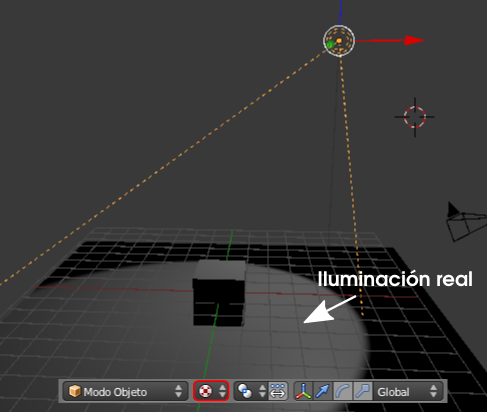
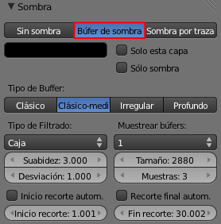
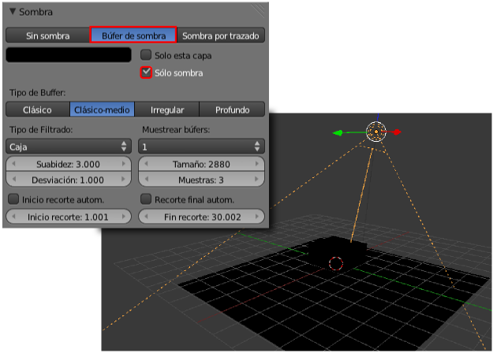
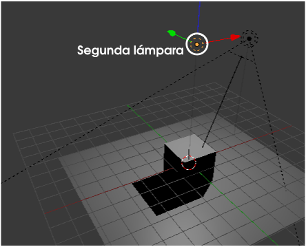
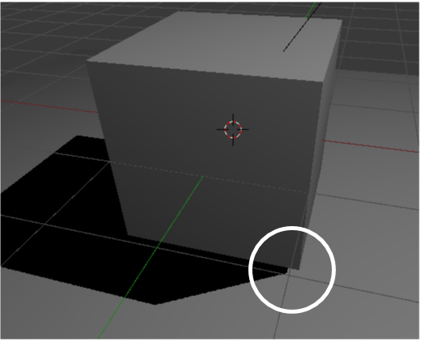
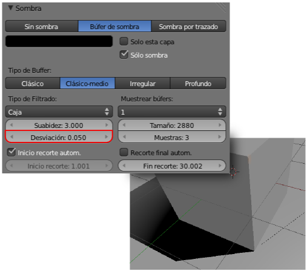

Sombreado GLSL
Pero ¿y si los objetos se mueven?. Entonces las técnicas de texturas prediseñadas y simuladas no nos sirven. En esa ocasión hay que echar mano de la técnica más avanzada que se encuentra en Blender para proyectas sombras en tiempo real; es el llamado sombreado GLSL (OpenGL Shading Languaje).
Requisitos para el sombreado GLSL
- Como es lógico debemos estar en la modalidad Blender Game.
- El único tipo de lámpara que consigue sombras arrojadas es Foco y es en su panel donde hacemos todos los ajustes.
- En el editor Vista 3D sólo se ve en sombreado Textura.
La opción se encuentra en el panel Render  ,
en la botonera Sombreado. Allí, además de activar el sombreado GLSL, atenderemos a que estén activadas las opciones Luces y Sombras.
,
en la botonera Sombreado. Allí, además de activar el sombreado GLSL, atenderemos a que estén activadas las opciones Luces y Sombras.
En una escena sencilla de un cubo sobre un plano, y si hemos cumplido con todos los requisitos descritos, esto es lo que tenemos en el editor Vista 3D en sombreado Textura, donde se distingue la zona que ilumina el cono de luz sobre el plano.
Advertencia
Si hemos cumplido con todos los requisitos y el sombreado GLSL no se nos muestra en el editor Vista 3D es que la tarjeta gráfica del ordenador no está capacitada para renderizados 3D de este tipo en tiempo real; nada podremos hacer para solucionarlo.
Para originar la sombra arrojada del cubo sobre el plano activamos en el panel del Foco la modalidad Búfer de sombra en la botonera Sombra.
De lo primero que nos deshacemos es del contorno circular luminoso que hace evidente que la lámpara que estamos usando es Foco . Activamos la opción Sólo sombra en la botonera Sombra del panel de la lámpara Foco .
Aparentemente todo se ha ido al traste pero lo que ha pasado es completamente lógico: le hemos dicho a Blender que sólo valore las sombras de esa lámpara por lo que la escena se ha quedado sin iluminación. Nada más que añadimos una lámpara (Añadir/Lámpara/Puntual) en la zona alta el problema se soluciona.
Una iluminación que suele funcionar muy bien es colocar una lámpara Semiesférica cerca del Foco y con la dirección también similar. Esto hace que se produzca una sombra con algo de pérdida de intensidad según se aleja del objeto.
Si nos acercamos a la zona de contacto entre el cubo y la sombra detectaremos cierta imprecisión a pesar de que el cubo y el plano sí se tocan.
La solución: descender el valor de Desviación en la botonera Sombra (recordemos que estamos editando la lámpara Foco , que es la que origina la sombra)
En ese mismo panel hay un parámetro llamado Tamaño que determina la calidad del contorno de la sombra. A mayores valores mejor es el resultado, pero el consumo de memoria RAM se disparará. 3.500 es un valor estándar.